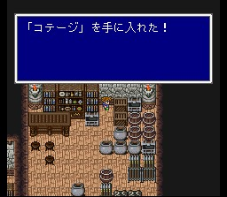

사게이트성
사게이트성에 가면 도서관 밖에 있던 몇몇 학자밖에 살아남지 않았다고 합니다. 제2세계에서 얻지 못했던 코테이지를 하나 얻을 수 있습니다.

도구상: 하이포션, 포션, 피닉스의 꼬리깃, 금바늘, 여인의 키스, 요술방망이,
안약, 해독제, 에텔, 성수, 코테이지, 거인의 약, 힘의 약, 스피드드링크, 프로테스드링크,
영웅의 약
무기상: 그레이트스워드, 헤비랜스, 비젠오사후네, 포이즌액스
방어구상:
골드실드, 골드헬름, 네지리하치마키, 삼각모자, 골드아머, 힘의 옷, 대지의 옷,
건틀렛
마법상: 백, 흑, 시공마법 레벨 4